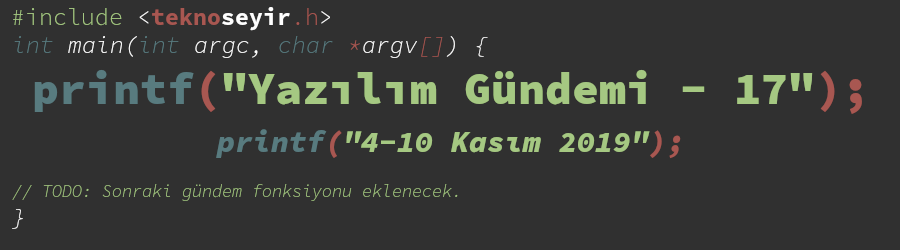
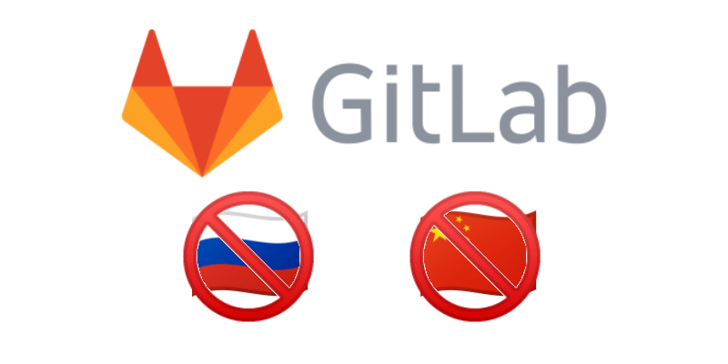
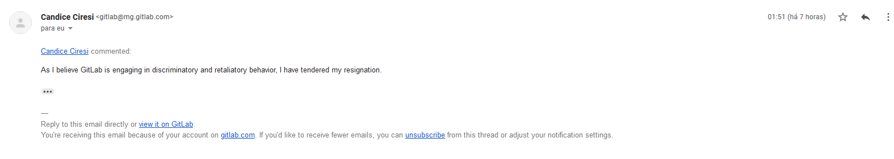
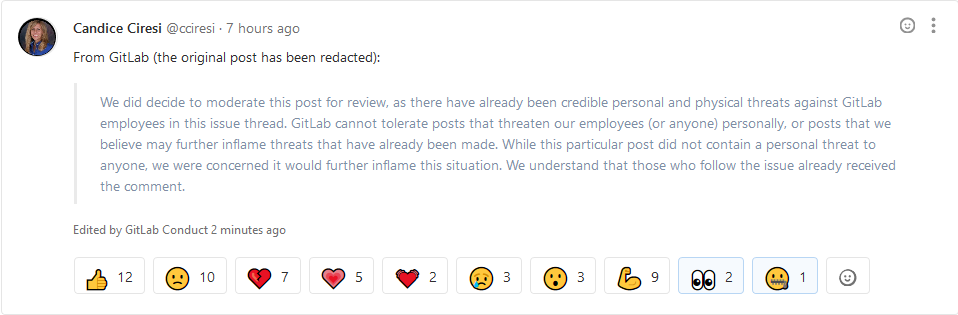
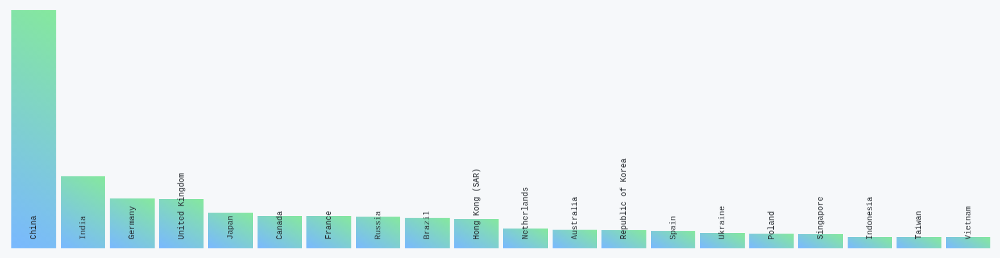
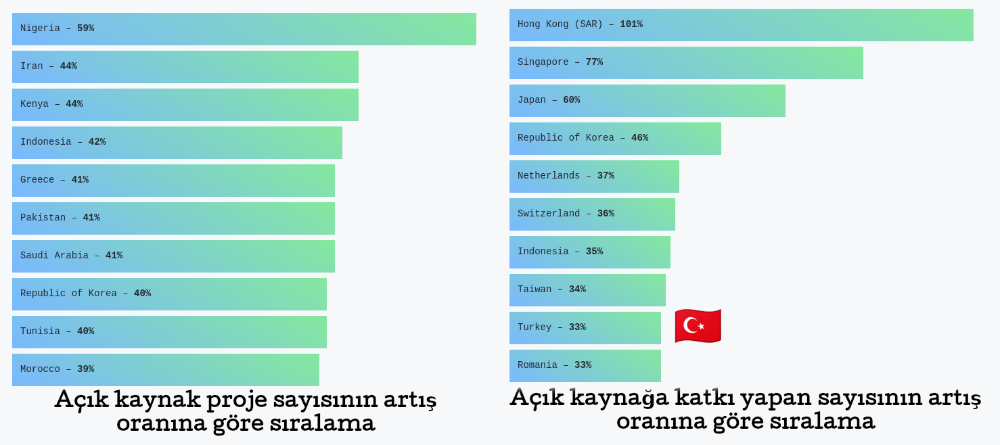
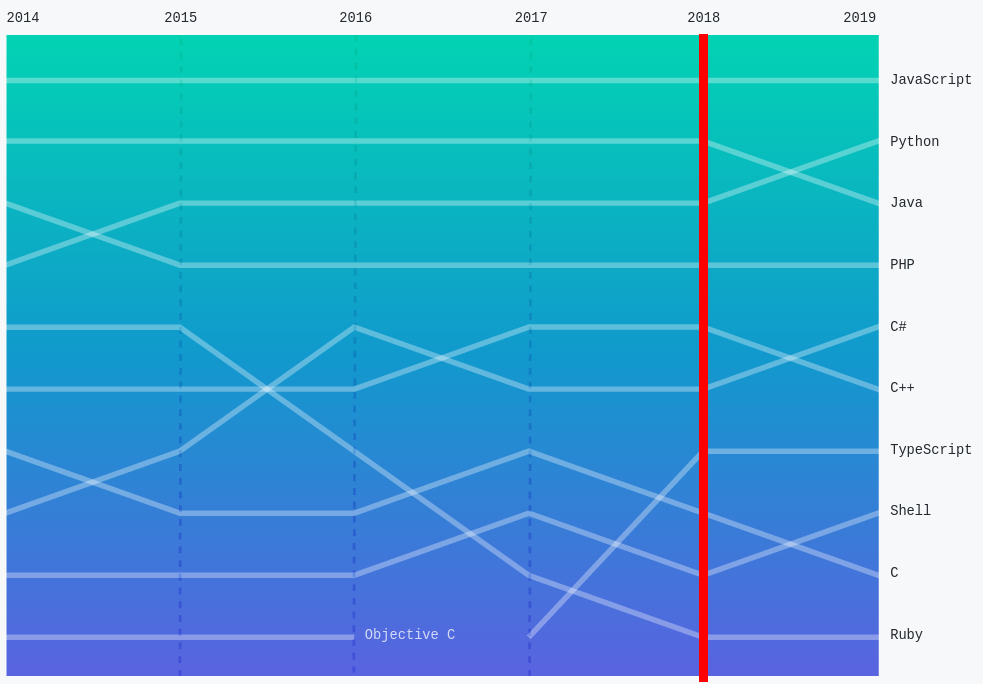
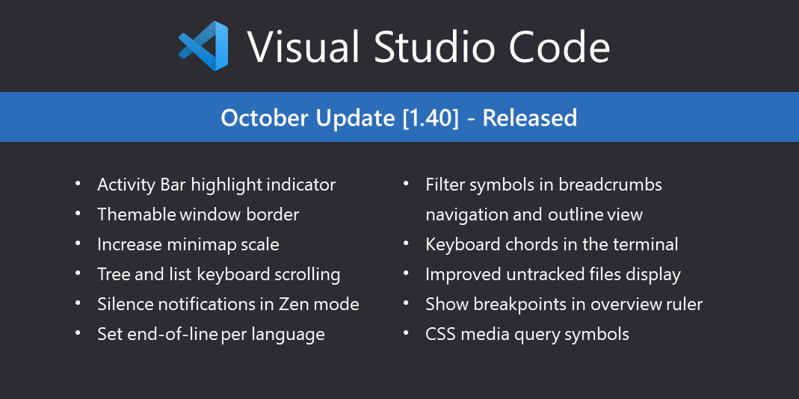

Yazılım Gündemi - 17
4-10 Kasım 2019
İçindekiler
- 1. GitLab, önemli pozisyonlar için ülke kısıtlamasına gitmeyi tartışıyor
- 2. GitHub Sponsors özelliği 30 ülkede betadan çıktı
- 3. GitHub yıllık Octoverse raporunu yayınlandı
- 4. Microsoft, Visual Studio Online hizmetini duyurdu
- 5. Git 2.24 sürümü duyuruldu
- 6. Google, Android 11'de AsyncTask API'sini kaldırmaya hazırlanır
- 7. Gradle 6.0.0 yayınlandı
- 8. Visual Studio Code Ekim 2019 sürümü duyuruldu
- 9. Anket: Türkiye Açık Kaynak Platformu Talep Analizi Anketi
- 10. Yaklaşan Etkinlikler
- 11. Diğer Haberler
- 12. Lisans

< Önceki Gündem | 4-10 Kasım 2019 | Sonraki Gündem >
1 GitLab, önemli pozisyonlar için ülke kısıtlamasına gitmeyi tartışıyor

Aslında tartışma yeni değil ilgili issue sayfasında da görülebileceği üzere yaklaşık 3 hafta önce başlamış fakat yeni gündeme geliyor. Tartışmanın başlama nedeni ise kurumsal müşterinin veri güvenliklerine ilişkin ilettiği kaygılar. Bu doğrultuda GitLab da, Rusya ve Çin gibi ülkelerden şu iki pozisyon için insan kabul etmeyecek: Site Güvenilirlik Mühendisi (Site Reliability Engineer) ve Destek Mühendisi (Support Engineer). Ayrıca bu engelleme, güvenlik takımını da etkiliyor. Bu iki pozisyondaki kişiler müşterilerin tüm verilerine erişebiliyormuş. Bu nedenle, ilgili ülkelerdeki kişilerin bu rollerde olması istenmiyor.
Çalışanların yaşadığı ülkelere göre izin sisteminin oluşturulması da ilgili kişiler için bir "ikinci sınıf vatandaş" algısı oluşturup, kendilerini rahatsız hissetmelerine yol açacağı için istenmiyor. Şimdilik en "insani" çözümün bu olduğunu söyleyen GitLab yetkilisi, şu anda bu engelleme kabul edilirse bu yolla hiçbir çalışanın etkilenmeyeceğini de belirtiyor.
Bu ülkelerden ilgili pozisyonlarda insan kaynağını alınmamasının yanı sıra eğer bu konu kabul edilirse mevcut çalışanlar da bu listedeki ülkelere taşınamayacaklar. Eğer taşınmak isterlerse işten ayrılmak zorunda kalacaklar.
Diğer açıdan bakacak olursak ismi geçen ülkelerin casusluk faaliyetleri de sürekli gündemde olduğu için (hatta bu tartışma da yine Çin'in siber ajanlarıyla ilgili bir raporun yayınlanmasından sonra başladı) kurumsal müşterilerin kaygıları da çok haksız sayılmaz. Üstelik bu engelleme yavaş yavaş bir sektör pratiği haline de gelmeye başlamış. Maalesef kurunun yanında yaş da yanıyor.
Bu hafta boyunca HackerNews ve Reddit gibi bir çok platformda tartışılan bu konu elbette ilgili issue sayfasında da tartışılmaya devam etti. Bu tartışmalar sırasında Candice Ciresi isimli GitLab'ın Global Risk ve Uyum Direktörü de aynı issue içerisinde istifa ettiğini paylaştı fakat sonra bu yazı GitLab tarafından kurallara uymadığı gerekçesiyle kaldırıldı. Yani bir nevi sansür uygulandı. GitLab böyle bir davranış sergilemeseydi, "müşterilerinin kaygılarını gidermeye çalışıyor" gözüyle bakmaya devam edecektim fakat böylesi sansürcü bir yaklaşımı GitLab'a yakıştıramadım.

Şekil 3: Candice Ciresi'nin ilk gönderdiği mesaj (bir takipçiye giden mail)

Şekil 4: GitLab'ın müdahalesi
Daha önceki yazılım gündemi yazılarından birinde de dediğim gibi, artık internete bağlandığın konumun bir önemi olmadığı dönemler eskide kaldı (belki de öyle bir dönem hiç olmadı, ambargo uygulanan bir ülkede olmadığımız için biz fark edemedik), günümüzde maalesef hangi ülkeden internete çıktığın önemli konulardan biri haline geldi.
Siz bu konuda ne düşünüyorsunuz? Böyle bir engelleme o ülkelerde yaşayan ya da vatandaşı olan kişilere haksızlık mı, yoksa günümüz siber güvenlik çağında bir mecburiyet mi? Yorumlar kısmında konuşalım.
2 GitHub Sponsors özelliği 30 ülkede betadan çıktı
Yaklaşık 6 ay önce GitHub, Sponsors özelliğini beta olarak duyurmuştu. Bugün ise yeni bir blog yazısı ile bu özelliğin 30 ülke için beta'dan çıktığını duyurdular. Ülkelerin listesine bu adresten bakabilirsiniz fakat sizi yormadan ben söyleyeyim, Türkiye bu ülkeler arasında değil.
GitHub'ın yeni Sponsors özelliği için aslında bir nevi dahili Patreon sistemi diyebiliriz. Aynı Patreon'da olduğu gibi kullanıcılar destek olmak istedikleri projelere abonelik yöntemi ile 'sponsor' oluyorlar. Proje sahipleri isterlerse farklı abonelik seviyeleri (ayda 1 dolar, ayda 5 dolar vb.) de oluşturabiliyor.
Eğer betadan çıkan 30 ülkenin birinde değilseniz, sizin ülkenize geldiğinde haberdar olmak bekleme listesine kayıt olup, Beta programı için başvuru yapabilirsiniz. GitHub, "resmi olarak varlık gösterdiğimiz diğer ülkelerde de bu özelliği açmak için çalışıyor" diyor fakat Türkiye'de resmi olarak varlar mı, bilgim yok ama umarım ülkemiz için de aktif olur.
Beta programındaki bazı proje sahipleri de şöyle bir kutlama videosu çekmişler.
Güzel bir özellik, umarım açık kaynak ve özgür yazılım topluluğunun gelişmesine vesile olur.
3 GitHub yıllık Octoverse raporunu yayınlandı
GitHub, her yıl olduğu gibi bu yıl da GitHub'da 1 yıl boyunca olan bitenleri rapor haline getirdi ve yayınlandı. Bu hafta bir blog yazısı yazarak yeni Octoverse raporlarını duyurdular. Şimdi isterseniz rapordan birkaç başlığı birlikte inceleyelim:
3.1 Topluluk
2019 yılı boyunca:
- GitHub'a toplam 10 milyon yeni kullanıcı katılmış ve toplam da 40 milyon üzeri kullanıcı sayısına çıkılmış.
- 44 milyon yeni depo yaratıldı ya da "fork" edildi ve 2018'e göre %44 daha fazla geliştirici ilk deposunu yarattı
- 87 milyon pull request kabul edilmiş ve 2018'e göre %28 daha fazla geliştirici ilk pull request'ini oluşturmuş.
- 20 milyon issue kapatılmış.
- 2.9 milyon organizasyon sayfası oluşturulmuş.
3.2 Ülkeler

Şekil 5: En çok açık kaynak kullanan (fork ve clone sayısına göre) ülkeler

Şekil 6: (SOL): Açık kaynak proje sayısının artış oranına göre sıralama (SAĞ): Açık kaynak katkı yapan sayısının artış oranına göre sıralama
Açıkcası bu sıralama beni şaşırttı çünkü önceki yazılım gündemi yazılarından hatırlayacağınız üzere GitHub, Amerika'nın yaptırımlarını uygulamaya başlamış ve İran'lı geliştiricilerin hesaplarına bazı kısıtlamalar getirmişti (bkz: Yazılım Gündemi - 3). Buna rağmen İran'ın bu listede ikinci sırada yer alması şaşırtı beni. Gerçi bu olay Temmuz ayında gerçekleşti ama demek ki bu olaydan önce yaratılan açık kaynak depolar bile %44 oranını sağlamış.
Sağdaki sıralama da beni bir o kadar şaşırttı. Ne yalan söyleyeyim listede Türkiye'yi görmeyi beklemiyordum. Diğer ülkelere göre alt sıralarda olsak da, açık kaynağa katkı yapanlar sayısındaki artış sevinmeme yetiyor. Umarım ilerleyen yıllarda daha da artar.
3.3 Programlama Dilleri

Şekil 7: Popüler ilk 10 programlama dili sıralaması
Gelelim popüler ilk 10 programlama dilleri sıralamasına. JavaScript 2014'den beri gelen liderliğini koruyor fakat Java, "İkinci en popüler programlama dili" unvanını Python'a kaptırıyor. PHP ise dördüncülük unvanını kimseye bırakmıyor. Listenin devamında ise C# ve C++ arasındaki çekişmeli mücadeleyi görmekteyiz. Ardından geçtiğimiz senelerde ilk 10'a girmeyi başaran TypeScript'in yerini koruduğunu görürken; Shell ve C arasında bir değiş tokuş gerçekleştiğini gözüküyor ve son olarak zaman içerisinde popülaritesinin düşüşüyle beni şaşırtan Ruby dilini onuncu sırada görmekteyiz.
Burada şu uyarısı yapmadan geçemeyeceğim: Bu listelerin projenize uygun dili seçme aşamasında sizi etkilemesine izin vermeyin. Sonuçta programlama dilleri birer araç ve biz de yapacağımız işe en uygun aracı seçip onu kullanıyoruz. Sırf popüler diye bir programlama dilini seçmek ileride teknik anlamda sizi zora sokabilir.
4 Microsoft, Visual Studio Online hizmetini duyurdu
Yaklaşık birkaç senedir uzaktan kod yazmaya olanak sağlayan hizmet ve araçların sayısındaki yükseliş gözüme çarpıyordu ki Microsoft da bu alanda bir şeyler görmüş olacak ki Visual Studio Code yazılımını, Visual Studio Online olarak uzaktan tarayıcı üzerinden çalışacak hale getirmiş ve Azure ekosistemine yeni bir parça daha eklemiş.
Denemek için online.visualstudio.com adresinden bir geliştirme ortamı oluşturmaya çalıştım fakat aktif bir Azure aboneliği istiyor. 1 aylık bedava Azure aktifleştirmeye çalıştım fakat o da kredi kartı bilgileri isteyince vazgeçtim. Aslında bu yıl içerisinde yayınlanmış ve sonradan coder.com isminde bir girişime dönüşmüş, şu açık kaynak çözüm de sanırım fikir vermesi açısından denenebilir: https://github.com/cdr/code-server. Sonuçta Microsoft'un kendisi de yine VS Code yazılımının alt yapısını kullanarak bu hizmeti oluşturdu. Yalnız şöyle bir şey var, ben Firefox ile açmaya çalıştığımda çok kısa bir "tarayıcınız şimdilik desteklenmiyor" deyip hemen ana sayfaya yönlendirdi. Chrome ile deneyince açıldı. İlginç…
Yalnız bu yeni hizmetin ismi konusunda biraz kafam karışık. Microsoft'un zaten Visual Studio Online isminde bir GitHub ve GitLab benzeri kod barındırma hizmeti sunduğu bir servisi vardı. [kullanıcı_adın].visualstudio.com şeklinde bir alan adresi veriyordu ve orada aynı GitHub gibi kodlarınızı barındırıp, issue açıp, proje yönetebiliyordunuz. Hatta ben 2013 yılında birtakım projelerim için kullanıyordum fakat görünen o ki Microsoft, bu isimi daha çok uygun olan bir projeye aktarmış. Benim kullandığım hizmetin ismi de Azure DevOps olmuş sanırım. Gerçi emin de değilim uzun zamandır Microsoft teknolojilerinden uzak olduğum için bu isim değişikliğinden haberim olmamış da olabilir.
Bu konu hakkında siz ne düşünüyorsunuz? Bu şekilde geliştirme ortamınızı buluta taşımak ister misiniz, yoksa "yok arkadaş ben kendi bilgisayarımda tutarım her şeyimi" diyenlerden misiniz? Ben şahsen ikincisiyim. Belki biraz geri kafalılık da sayılabilir bilmiyorum ama tarayıcı üzerinden kod yazmak bana biraz garip geliyor. Ayrıca Levent Abi'nin söylemini tekrar hatırlatmakta fayda var: "Bulut dediğin başkasının bilgisayarıdır. Bir gün gelir de, 'sana hizmet vermiyorum' derse kalırsın öyle ortada" (bkz: Yazılım Gündemi - 3). Bu doğrultuda endişelerimin de haklı olduğunu düşünüyorum.
5 Git 2.24 sürümü duyuruldu
Artık versiyon kontrol sistemlerinin lideri haline gelen Git, bu hafta içerisinde 2.24 numaralı sürümünü duyurdu. Birkaç değişikliği birlikte inceleyelim:
5.1 Yeni özellik makroları
Git çok uzun zamandır hem global hem de sadece depo bazında ayarlar yapmamıza
izin veren git config ile kullandığımız ayar alt sistemine sahip. Hem
kendinizi tanıtmak için hem de bazı özellikleri açıp kapatabilmek ya da
özelleştirmeler yapabilmek için .gitconfig isimli dosyası komut yardımıyla
ya da elle düzenlememiz gerekiyor. Fakat bazen yeni gelen bazı özellikleri
keşfetmek ve ayar yapmak bazen fazla zaman alıcı olabiliyor. Bu yüzden artık
Git geliştiricileri bazı yeni özellikler için makro sistemi geliştirler ve
şöyle bir komut ile özellikleri açıp kapatabileceğiz:
$ git config feature.manyFiles true
Bu komutu çalıştırdığınızda Git sizin için o özellikle ilgili ayarları düzenliyor. Bu makrolar Git geliştiricileri tarafından önceden belirlenmiş olarak geliyor.
5.2 Tarihçeyi yeniden yazmak için alternatif araçlar
Projelerde çalışırken, her ne kadar yapılması tavsiye edilmese de bazen
belirli nedenler ötürü Git tarihçesini yeniden yazmamız gerekebiliyor. Mesela
bir dosyayı tüm commit'lerden silmek gibi. Şimdiye kadar bunun için git
filter-branch aracı kullanıyorduk, fakat bu aracın kullanımı biraz karışık
olabiliyordu. Bu nedenle Git geliştiricileri yeni bir araç geliştirdiler: git
filter-repo. Bu araç ile:
git filter-repo --analyzekomutu ile artık depomuz hakkındaki bazı ölçümlerle ilgili bilgiler alabileceğiz. Mesela kaç tane obje olduğu, en büyük dosyaların ya da klasörlerin hangileri olduğu gibi. Bunun gibi bilgiler veren başka bir araça göz atmak isterseniz: git-sizer--path-{glob-regex}ile artık tarihçeyi sadece belirli bir dizin için değiştirken glob ve regex kullanabileceğiz.- Diğerine göre daha genişletilebilir bir araç olduğu için artık kendimiz bazı alt komutlar ekleyebileceğiz. Demo için şu adresdeki depoya göz atabilirsiniz: newren/git-filter-repo
Diğer özellikler ve yenilikler için GitHub'ın yayınladığı bu blog yazısı çok faydalı olabilir. Ben de bundan faydalandım.
6 Google, Android 11'de AsyncTask API'sini kaldırmaya hazırlanır
Asenktron işler, programlamanın hemen her alanında işimize çok yarayan ve gerekli olan yapılar. Çünkü bir web sunucusundan veri çekerken kullanıcıların ekranlarını dondurmak istemeyiz. Android tarafında da bu tarz asenkron işler için Google tarafından sisteme eklenmiş bir API var. Android geliştirmede pek deneyimim olmasa da xda-developers sitesindeki yazıdan anladığım kadarıyla bu API biraz sorunluymuş. Şöyle ki bazı durumlarda asenkron iş tamamlandığında uygulamanın ilgili görsel tarafı artık var olmayabilir (kullanıcı başka bir ekrana geçmiştir vs.) fakat AsyncTask API'si bunu kontrol etmediği için uygulamanın çökmesine yol açabiliyor. Elbette siz manuel olarak bazı kontroller ekleyebilirsiniz ama bu sefer de kod tekrarı gibi şeyler oluşabiliyor. Bu gibi nedenlerden dolayı Google da, sanırım fazla da kullanılmayan bir API olduğu için, bunu deprecate etmeye karar verdi. Bu ifadeyi Türkçe'ye tam nasıl çeviririz bilemiyorum ama biraz açmak gerekirse: API tam olarak kaldırılmayacak ama artık desteklenmeyecek ve kullanılması da tavsiye edilmeyecek. Zaten xda-developers sitesindeki yazıdan anladığım kadarıyla pek tercih edilen de bir API değilmiş. Android geliştirici arkadaşlar da doğrulayabilirler sanırım. Çoğu geliştirici onun yerine daha esnek RxJava ya da Kotlin tarafında Coroutines kütüphanelerini kullanıyor.
Android geliştiricisi arkadaşlar için pek büyük bir kayıp sayılmasa da kullanan arkadaşlar varsa artık yeni kütüphanelere geçmelerini tavsiye ederim.
7 Gradle 6.0.0 yayınlandı
Yazılım geliştirme süreçlerinin evrildiği hal itibariyle artık 3. parti kütüphaneler olmadan çözümler geliştirmek pek mümkün gözükmüyor. Haliyle biz de bu 3. parti kütüphaneleri ve derleme işlemlerini yönetmek için araçlara ihtiyaç duyduk. İşte Gradle da bu araçlardan birisi. Her ne kadar C++ ve JavaScript gibi dillerde desteği olsa da daha çok Java ekosisteminde ve Android uygulama geliştirme alanlarında daha çok tercih edilen bir araç. Bu hafta itibariyle de 6.0.0 sürümünü duyurdu. Bu sürümde duyurulan bir değişikliği birlikte inceleyelim:
7.1 Java ve Groovy için daha hızlı derleme
Direkt bir örnekle açıklamak gerekirse:
class A {} class B { static void foo() { A a1 = new A(); } } class C { void bar() { B.foo(); } }
Buradaki her sınıfı ayrı bir dosya olarak düşünün. Gradle'ın önceki sürümlerinde A sınıfında bir değişiklik olduğunda tüm diğer dosyalar da yeniden derleniyordu fakat artık sadece A ve B sınıfları derlenecek. Çünkü A sınıfın değişmesi C sınıfını doğrudan ilgilenmiyor. O sadece B sınıfındaki bir fonksiyonu çağırıyor. Böylece derlenecek dosya sayısındaki azaltma da derleme hızlarını olumlu olarak etkiliyor.
Diğer özellik ve değişiklikler için konu başlığına eklediğim bağlantıya tıklayabilirsiniz.
8 Visual Studio Code Ekim 2019 sürümü duyuruldu

9 Anket: Türkiye Açık Kaynak Platformu Talep Analizi Anketi
Türkiye Açık Kaynak platformu çalışmaları devam ediyor. Konu başlığına eklediğim ankete katılarak fikir ve önerilerinizi paylaşabilirsiniz. Türkiye Açık Kaynak Platformu hakkında ümitliyim, umarım yakın zamanda bir şeyler ortaya çıkar.
10 Yaklaşan Etkinlikler
| Etkinlik İsmi | Yeri | Tarihi |
|---|---|---|
| 2020 ve Sonrası için Yazılım Test Trendleri | Ankara | 14 Kasım 14:00 |
| Flutter ile İlk Mobil Uygulamanızı Yazın | İstanbul | 15 Kasım 19:00 |
| Cyber Security Summit | İstanbul | 16 Kasım 09:00 |
| TensorFlow World Extended Ankara | Ankara | 16 Kasım 13:00 |
11 Diğer Haberler
- Bazı çalışanlar, Google'ın petrol şirketleri ile yaptığı iş anlaşmalarını protesto etti.
- Electron bazlı uygulamalar Mac uygulama mağazasından atılma tehdidi ile karşı karşıya. Blog yazısı, HackerNews, Reddit.
- JetBrains, IntellijIdea için geliştirdiği yeni yazım denetimi aracını tanıttı: Grazie.
- Kendi sunucusunda GitHub çalıştıranlar için GitHub Actions beta olarak duyuruldu.
- OpenAI organizasyonunun metin oluşturma yapay zekası GPT-2 yayınlandı. Alternatif
- Google, Cardboard yazılımını açık kaynak yaptı. GitHub Deposu
- Postman'den yeni görselleştirme aracını duyurdu: API Visualizer.
- Microsoft SRC takımı, Windows içerisinde Rust kullanım alanları ile ilgili bir blog yazısı paylaştı.
- WinUI 3.0 Alpha duyuruldu.
- PHP topluluğu, Union Types özelliği önerisini kabul etti. Öneri detayları sayfası
- Go programlama dili 10 yaşında.
- TypeScript 3.7 final sürümü yayınlandı.
- Rust programlama dilinin 1.39.0 sürümü duyuruldu. özellikleri hakkında özel blog yazısı yayınlandı.
- D programlama dilinin 2.089.0 sürümü yayınlandı.
- Dart programlama dilinin 2.6 sürümü yayınlandı.
- Facebook, sıkıştırma algoritması zstandard'ın 1.4.4 sürümünü duyurdu.
- KDAB, yeni bir Qt komponenti duyurdu: KDDockWidgets.
- Açık kaynak 3 boyutlu grafik motoru Ogre, 1.13.3 sürümünü yayınladı.
- GraphQL Zeus, 2.0.0 sürümü çıktı
12 Lisans

Yazılım Gündemi - 17 yazısı Eren Hatırnaz tarafından Creative Commons Atıf-GayriTicari-AynıLisanslaPaylaş 4.0 Uluslararası Lisansı (CC BY-NC-SA 4.0) ile lisanslanmıştır.